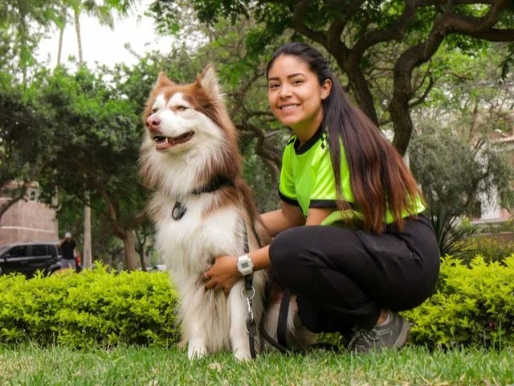

Camille, 29 ans
Éducatrice en crèche, vit en ville, propriétaire d'un Berger Australien de 3 ans, réactif envers les humains depuis un incident en balade il y a un an.
« J'adorerais courir avec d'autres binômes, mais je ne sais jamais sur qui je vais tomber. Un seul mauvais croisement et je passe ma soirée à gérer une crise plutôt qu'à profiter. »
Objectifs
- Sortir de l'isolement du "je cours toujours seule avec mon chien"
- Progresser sur la sociabilisation de son chien, à son rythme, sans pression
- Trouver des créneaux/lieux où le risque de croisement imprévu est minimal
Frustrations
- Les groupes de running canin classiques ne précisent jamais le tempérament des autres chiens à l'avance
- Doit systématiquement s'excuser ou se justifier quand elle refuse une sortie de groupe
- Anxiété à l'idée d'un croisement surprise sur un parcours non maîtrisé
Besoins clés
- Filtrer les runs/binômes par compatibilité tempérament (ex. "chiens calmes uniquement" ou "solo accepté")
- Voir les infos d'un parcours avant de s'engager (affluence, présence probable d'autres chiens en liberté)
- Pouvoir indiquer discrètement "chien réactif" sans que ce soit stigmatisant dans l'interface